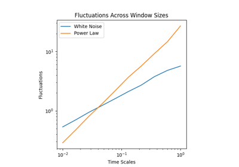
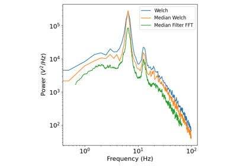
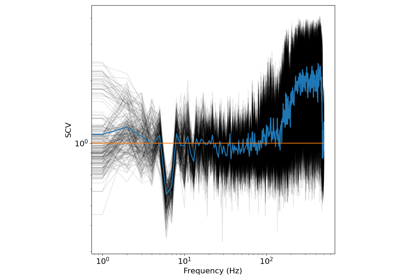
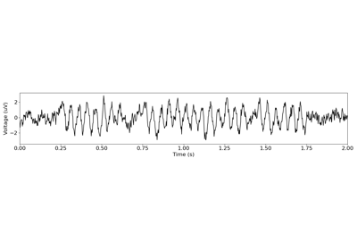

Tutorials¶
Tutorials, split up by each sub-module, introducing the tools available in NeuroDSP.
Contents
Analyzing Aperiodic Signal Properties¶
Tutorials for the aperiodic module.
Autocorrelation Measures

Fluctuation analyses
IRASA
Burst Detection¶
Tutorials for the burst module.

Filtering¶
Tutorials for the filt module.


Rhythm Detection & Analyses¶
Tutorials for the rhythm module.


Simulating Signals¶
Tutorials for the sim module.


Spectral Analyses¶
Tutorials for the spectral module.

Spectral Domain Analysis: Power
Spectral Domain Analysis: Power

Spectral Domain Analysis: Variance
Spectral Domain Analysis: Variance
Time Frequency Analyses¶
Tutorials for the timefreq module.


Morlet Wavelet Analysis